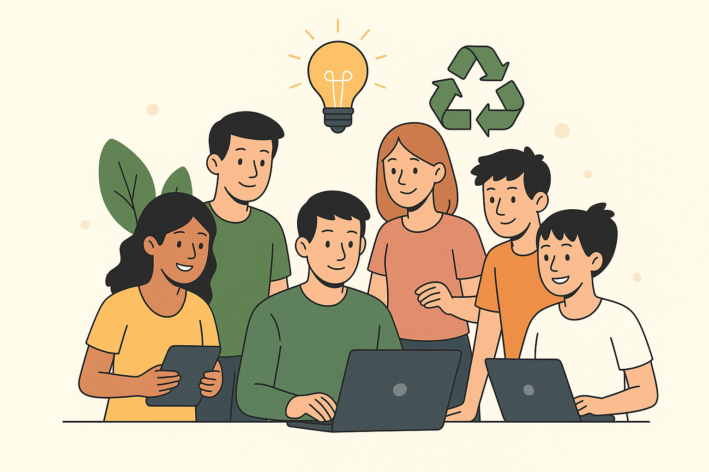

Quem somos?
Somos um grupo de estudantes do 1º período do curso de Ciência da Computação, unidos pela vontade de criar soluções que impactem positivamente o meio ambiente e a sociedade. Este site foi desenvolvido como parte de um projeto com foco em conscientização sobre o lixo eletrônico e sua reciclagem. Acreditamos que, com informação e ação, podemos transformar o mundo em um lugar mais sustentável.
Integrantes do grupo
Nosso objetivo é informar, inspirar e incentivar atitudes conscientes
- Isabela Bernardes
- Julia Silveira
- Lorenzo Moura
- Lucas Andrade
- Lucas Fantone
- Pedro Henrique Martins